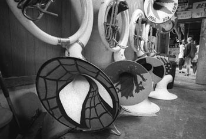

|
Stanford Begins New Capital Campaign
This month, President Hennessy announced “The Stanford Challenge,” the largest university capital campaign in the United States, to maintain and enhance Stanford’s position as a world class institution. This $4.3 billion, five-year campaign has been in a “quiet phase” for some time, but Hennessy’s announcement coincided with the start of Alumni Homecoming Weekend, naturally a great time to snag donations.
Discrimination Still Alive at Stanford
Early last Saturday morning, a residential assistant barged into my room, tore off my sheets, and then proceeded to reprimand me for my allegedly “wrong” and “unfair” behavior. Like a deer blinded by headlights, I stared at her vacantly wondering what terrible thing I had unwittingly done during my sober sleep. Had I vandalized a peer’s personal property? Had I disrupted others’ sleep with loud, grating music? Had I set off the fire alarm during a casual game of hallway soccer?
Replacing An Empty Mind With An Open One
In my Structured Liberal Education (SLE) lectures, I was recently exposed to an interesting Buddhist film that reminded me of a question that I used to ask myself: “Is it possible for a man to love a woman so much that in order to be with her for just this lifetime, he would sacrifice his soul to Hell for an eternity?” This is a difficult question. As a Christian guy who was once in love with a beautiful, but staunchly atheistic girl, I used to spend hours each day searching for an answer.
New Stadium is Ready for Some Wins
Over the last month, not much positive has been uttered about the football program. Nevertheless, one of the best things to happen to this program in a long time occurred a little over a month ago when the new Stanford Stadium opened for the September 16th game vs. Navy. For most students, their first game back on campus came the following week, when the Cardinal faced off against Washington State. All home games this season have had one thing in common: the new stadium looked MUCH better than the team.
Journalist Murder Still a Mystery
Russian investigative journalist Anna Politkovskaya was murdered as she returned to her apartment in Moscow. A prominent journalist and publisher of the Novaya Gazeta, Politkokvskaya was a vocal critic of the current Russian administration and won international awards for her coverage of the current rebellion in Chechnya.
|
Presidential Lecturer Discusses Western Critique of Islam
On October 10, the Presidential Lecture Series—an annual sequence of speeches, panels, and discussions—kicked-off with “Thinking about Blasphemy and Secular Criticism,” a talk by anthropologist Talal Asad. Asad is a Distinguished Professor at City University of New York and part of a new school of anthropologists who look not only at populations, but how those populations are studied and viewed in the rest of the world.
Foley Scandal Should Not Indict Others
As I am sure you have all heard by now, a member of the U.S. House of Representatives has been accused of something horrible. His almost immediate resignation from office seems only to confirm that the accusations are true. Representative Mark Foley, (R-FL), through instant messaging, engaged in conversations that can only be described as the solicitation of sex from a minor.

The Stanford Band: The Best Show Out There
The Leland Stanford University Marching Band is truly entertaining. And I’m not referring to their half-time shows or Bohemian attitude. Those are amusing, but hardly rise to the level of the sublime. No, I’m thinking of the Band’s relation to the administration.
A Bolder Edo
The Liberal Democratic Party (LDP) has ruled Japan consecutively, except for a few months, since the establishment of democracy after World War Two. As such, most politicking in Japan takes place intra-party, rather than between the LDP and the weak and divided opposition. After five years of economic and organizational reform, Prime Minister Junichiro Koizumi stepped down to be replaced by cabinet secretary, Shinzo Abe. The succession battle was surprisingly orderly; Abe easily beat Taro Aso, the foreign minister, and Sadakazu Tanigaki, the finance minister.
Translating Democracy
On October 11th, Anwar Ibrahim, former Deputy Prime Minister of Malaysia, addressed a Stanford audience regarding his beliefs on the prospects for democracy in the Muslim world. Anwar speaks with authority given that he has suffered the ill effects of the deficiency of democratic principles in the Muslim world. He spent his time from 1998 to 2004 reading the complete works of Shakespeare a few times over, while in solitary confinement in a Malaysian prison for his political activism.
Venezuela: Elections or Bust?
The leaders of the West regularly lobby on behalf of democracy, and the political process of selecting leaders through peaceful, orderly, free and fair elections. And yet, street revolution seems all the rage and a great deal have turned out quite well: mimicking the post-Cold War revolutions of Eastern European Communist dictatorships, citizens of former Soviet satellites have had remarkable success in combating fraudulent elections, such as the “Orange Revolution” in Ukraine and the “Rose Revolution” in Georgia. Others have met with less success, such as the “Denim Revolution” in Europe’s last dictatorship, Belarus. When such circumstances prove to be successful, the world can rejoice along with the citizens in revelry, knowing that this uncommon occurrence may be a necessary purge of the tyrannical practices of these countries’ pasts.
|